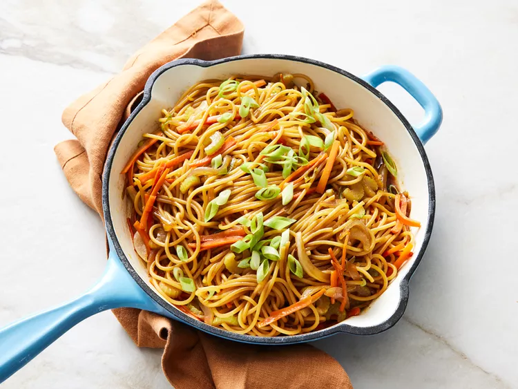

Lo-Mein-Noodle
Homepage

Description
Sweet and savory flavors come together in this takeout-inspired noodle dish, ready in just 30 minutes.
Customizable with vegetables, chicken, shrimp, or beef.
Ingredients
- 1 (8 ounce) package spaghetti
- 3 tablespoons low-sodium soy sauce
- 2 tablespoons teriyaki sauce
- 2 tablespoons honey
- ¼ teaspoon ground ginger
- 3 stalks celery, sliced
- 2 large carrots, cut into large matchsticks
- ½ sweet onion, thinly sliced
Steps
- Bring a large pot of lightly salted water to a boil. Cook spaghetti in boiling water, stirring occasionally, until tender yet firm to the bite, about 12 minutes; drain, then rinse with cold water to cool.
- Meanwhile, whisk soy sauce, teriyaki sauce, honey, and ginger together in a small bowl; set aside.
- While the spaghetti cooks, heat oil in a large skillet or wok over high heat. Cook and stir celery, carrots, onion, and green onions until slightly tender, 5 to 7 minutes.
- Add spaghetti and soy sauce mixture. Cook, stirring frequently, until heated through and evenly coated, about 2 to 3 minutes. Serve garnished with additional sliced green onions, if desired.